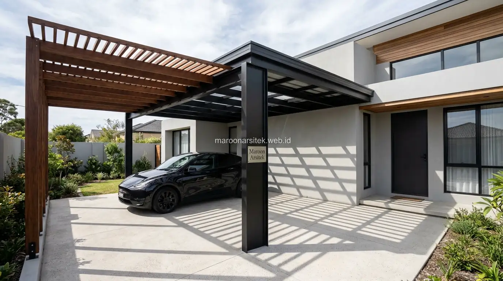

Renovasi fasad rumah dapat menghadirkan perubahan visual signifikan melalui penggantian elemen seperti pintu, jendela, kanopi, dan lansekap depan, tanpa memerlukan pembongkaran struktur dinding maupun elemen utama bangunan. Maroon Arsitek menawarkan pendekatan renovasi fasad yang berfokus pada elemen-elemen ini melalui layanan jasa renovasi rumah untuk hasil maksimal dengan anggaran yang terkendali.
Peremajaan fasad sering dianggap identik dengan proyek besar yang memerlukan pembongkaran, padahal banyak elemen fasad dapat diganti atau diperbarui secara independen tanpa mengganggu struktur bangunan yang sudah berdiri. Bagian berikut menguraikan tiga elemen fasad yang dapat diperbarui untuk menghadirkan tampilan baru secara efisien.
Penggantian Pintu dan Jendela sebagai Pembaruan Visual Utama
Penggantian pintu utama dan jendela menjadi salah satu cara paling efektif mengubah kesan fasad rumah, karena kedua elemen ini menjadi titik fokus utama yang pertama kali dilihat dari luar bangunan. Pembaruan pada elemen ini dapat dilakukan tanpa menyentuh struktur dinding di sekitarnya.
Pemilihan material pintu dan jendela yang lebih modern, seperti kombinasi kaca dan bingkai aluminium ramping, dapat langsung mengubah kesan fasad menjadi lebih kontemporer dibanding model pintu dan jendela konvensional dengan bingkai tebal.
Penyesuaian ukuran bukaan jendela, apabila memungkinkan secara struktural, turut membantu memaksimalkan pencahayaan alami sekaligus memberikan kesan fasad yang lebih terbuka dan modern dibanding kondisi sebelumnya.
Pemilihan Model Pintu Utama yang Menjadi Focal Point
Kebutuhan focal point baru pada fasad dijawab melalui pemilihan model pintu utama dengan desain yang menonjol, baik dari segi warna, material, maupun bentuk, sehingga menjadi elemen yang langsung menarik perhatian saat dilihat dari luar rumah.
Pemilihan ini perlu tetap mempertimbangkan keselarasan dengan elemen fasad lain, agar pintu yang menonjol tidak terkesan terpisah dari keseluruhan konsep desain yang ingin dihadirkan pada tampilan depan rumah.
Penambahan Kanopi atau Pergola sebagai Elemen Baru Fasad
Penambahan kanopi atau pergola pada area tertentu fasad dapat menghadirkan dimensi baru pada tampilan rumah, sekaligus memberikan fungsi tambahan seperti perlindungan dari sinar matahari atau hujan pada area carport dan teras depan. Elemen ini dipasang sebagai tambahan tanpa memerlukan perubahan pada struktur dinding eksisting bersama tim kontraktor renovasi kami.
Pemilihan material kanopi, seperti rangka baja ringan dengan atap polikarbonat atau kayu dengan struktur pergola terbuka, disesuaikan dengan konsep keseluruhan fasad agar penambahan elemen ini terlihat menyatu, bukan sekadar tempelan tambahan.
Penempatan kanopi atau pergola turut mempertimbangkan proporsi dengan keseluruhan fasad, memastikan elemen tambahan ini memperkuat kesan modern tanpa mendominasi atau mengurangi estetika bagian fasad lain yang sudah ada.

Kombinasi Material Kanopi dengan Konsep Fasad Keseluruhan
Kebutuhan keselarasan visual dijawab melalui pemilihan material kanopi yang senada dengan elemen fasad lain, seperti warna rangka yang serasi dengan bingkai jendela atau pintu yang telah diperbarui sebelumnya.
Keselarasan ini memastikan penambahan kanopi atau pergola terlihat sebagai bagian terintegrasi dari keseluruhan konsep renovasi fasad, bukan elemen tambahan yang terkesan terpisah dari desain utama rumah.
Perawatan dan Pembaruan Elemen Lansekap Depan Rumah
Pembaruan elemen lansekap, seperti taman kecil, jalur pejalan kaki, dan pencahayaan luar ruangan, turut memperkuat kesan renovasi pada fasad rumah tanpa memerlukan pekerjaan konstruksi pada bangunan utama. Elemen lansekap sering menjadi detail yang memberikan sentuhan akhir pada keseluruhan tampilan depan rumah.
Penataan ulang tanaman dan elemen hijau di area depan dapat menghadirkan kesegaran visual dengan biaya yang relatif terjangkau, terutama apabila menggunakan tanaman yang tidak memerlukan perawatan intensif namun tetap memberikan kesan asri.
Penambahan pencahayaan taman pada titik-titik strategis membantu menonjolkan elemen lansekap dan fasad pada malam hari, memberikan dimensi visual tambahan yang memperkuat kesan renovasi meski dilakukan dengan anggaran terbatas.
Pemilihan Tanaman dengan Perawatan Minimal namun Estetik
Kebutuhan lansekap yang mudah dirawat dijawab melalui pemilihan jenis tanaman yang tahan terhadap kondisi cuaca dan tidak memerlukan penyiraman intensif, namun tetap memberikan kesan hijau yang menyegarkan pada area depan rumah.
Pemilihan ini membantu pemilik rumah menikmati hasil renovasi lansekap tanpa beban perawatan berlebihan, sehingga tampilan segar pada fasad dapat bertahan lebih lama tanpa memerlukan perhatian khusus secara berkala.